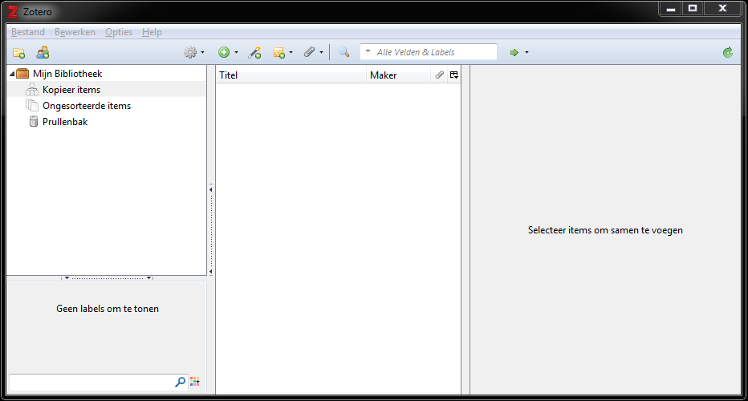
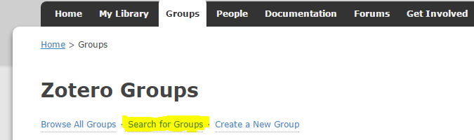

Viewing Zotero in your browser
Manga's are all listed in a library in Zotero. The quickest and easiest way to view our catalogue is in your webbrowser. Click on this link and you'll be redirected to our library.
Installing the Zotero stand-alone version
To install Zotero, you'll first have to download and execute the .exe. The .exe can be downloaded from the followinglink.
After downloading the file, you'll have to execute and install the program. After installing the program, the stand-alone version will open and look like this:

Now all that's left is to register and login. Registering can be done on this link. After that you have to login on the stand-alone version.
After you go to the options pane, you click on preferences.
After that you go to Synchronization tab and login with your user credentials.
To see the library, it is necessary to join the group. This can be done if you log in on www.zotero.org and go to the groups tab.
After that you can browse groups, type 'japanse_studies_KULeuven' and press search.

Now that you've searched for the page, you can see the group in the search results.

When you click on the name of the group, you'll be redirected to the homepage of the group. There you can request your membership. When this is approved, you'll be able to view it in your stand-alone version.